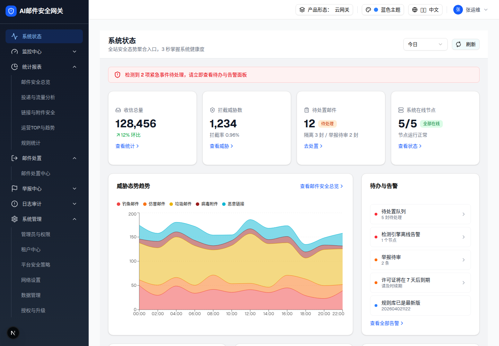

2.1 页面头部（标题 + 时间范围选择器 + 刷新按钮）2层
| 项 | 值 |
|---|---|
| demo 源位置 | security-ops-dashboard.tsx L266–290 |
| spec 章节 | §1.1 标题区 [Base] · §1.2 全局控件 [Base] |
| 交互层级 | 2（层级0 默认态内嵌；层级1 下拉展开与切换 → 子文件） |
graph LR
L0["层级0 默认态
(今日)"] -- 点击时间范围触发器 --> L1["层级1 下拉打开
(radix Select listbox)"] L1 -- 选择 最近7天/最近30天 --> L0b["层级0' 数据刷新
(KPI/趋势/TOP5 全联动)"] L0 -- 点击刷新 --> R["图标旋转 + 趋势数据重新生成"] R -- 再次点击刷新 --> L0
(今日)"] -- 点击时间范围触发器 --> L1["层级1 下拉打开
(radix Select listbox)"] L1 -- 选择 最近7天/最近30天 --> L0b["层级0' 数据刷新
(KPI/趋势/TOP5 全联动)"] L0 -- 点击刷新 --> R["图标旋转 + 趋势数据重新生成"] R -- 再次点击刷新 --> L0
0 交互层级 0：默认态（今日）
触发路径：页面加载即渲染。
系统状态
全站安全态势聚合入口，3 秒掌握系统健康度
预览可操作：点击时间范围触发器展开/收起选项并可选择（选择后触发器文案更新，并联动下方 2.3 KPI 预览卡数值——与 demo 全页联动行为一致的演示；下拉浮层为规格页脚本注入的交互辅助，demo 原为 radix portal 渲染，提取态见层级1）；点击「刷新」图标开始旋转，再次点击才停止（demo 实测行为，见差异 D2）。

animate-spin 持续旋转（CDP 实测 class：lucide-refresh-cw h-4 w-4 mr-2 animate-spin）。UI 元素清单
| 元素 | 类型 | 文案/图标 | 样式要点 | 交互 |
|---|---|---|---|---|
| 主标题 | h1 | 系统状态 | text-xl font-bold | — |
| 副标题 | p | 全站安全态势聚合入口，3 秒掌握系统健康度 | text-sm text-gray-500 | — |
| 时间范围选择器 | shadcn Select（radix） | 今日 / 最近 7 天 / 最近 30 天，默认「今日」 | w-32 触发器，h-9 | 切换驱动全页 KPI、趋势、TOP5 刷新；详见层级1 |
| 刷新按钮 | Button variant=outline size=sm | RefreshCw 图标 + 刷新 | h-8 rounded-md px-3 | 点击 toggle refreshing：图标 animate-spin，趋势数据重新随机生成；KPI 不变（差异 D2） |
DOM 树比对结果（提取 HTML vs demo 运行时 DOM）
| 比对项 | demo 实际 DOM | 提取的 HTML | 一致 |
|---|---|---|---|
| 根节点 | div.bg-white.dark:bg-gray-950.border-b.border-gray-200.px-6.py-4 | 同左（outerHTML 原样嵌入） | ✅ |
| 节点总数 | 16 | 16 | ✅ |
| 直接子节点 | 1（flex 两端对齐容器） | 1 | ✅ |
| 标题/副标题文案 | "系统状态" / "全站安全态势聚合入口，3 秒掌握系统健康度" | 一致 | ✅ |
| 触发器初值 | "今日"，data-slot=select-trigger aria-expanded=false | 一致 | ✅ |
| 刷新按钮 | button > svg.lucide-refresh-cw + 文本「刷新」 | 一致 | ✅ |
交互层级详情（拆分为独立文件）
| 层级 | 名称 | 触发路径 | 详情链接 |
|---|---|---|---|
| 0 | 默认态（今日） | 页面加载 | 上方内嵌 |
| 1 | 时间范围下拉打开与切换（含 7 天 / 30 天全页数据联动） | 点击 Select 触发器 | 查看详情 -> |